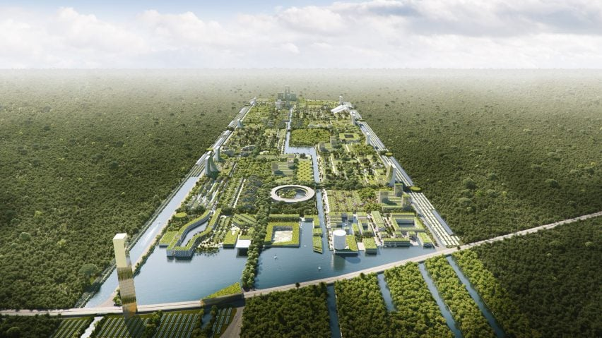
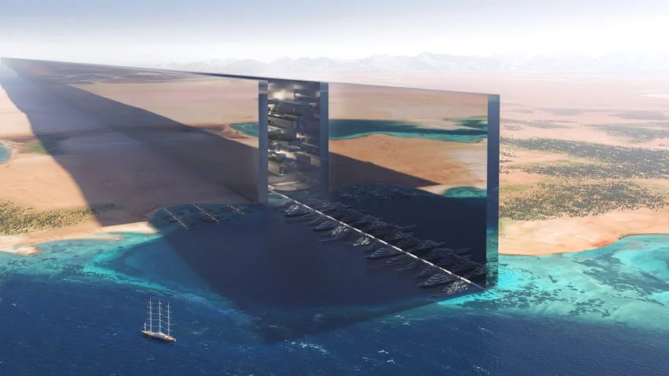
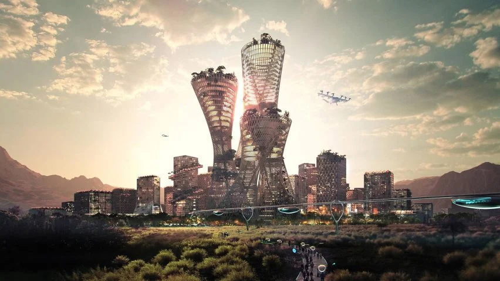
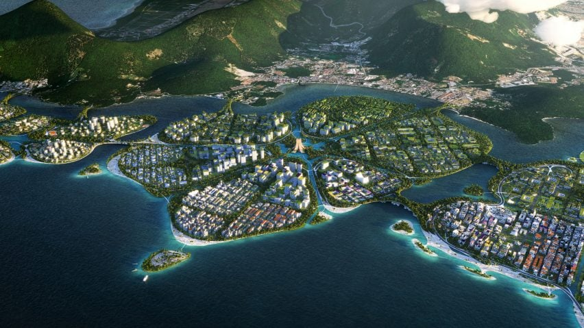
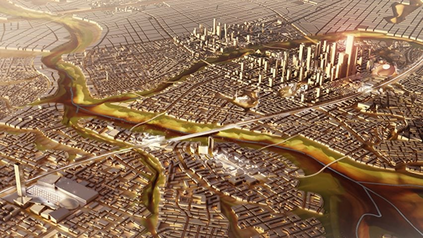
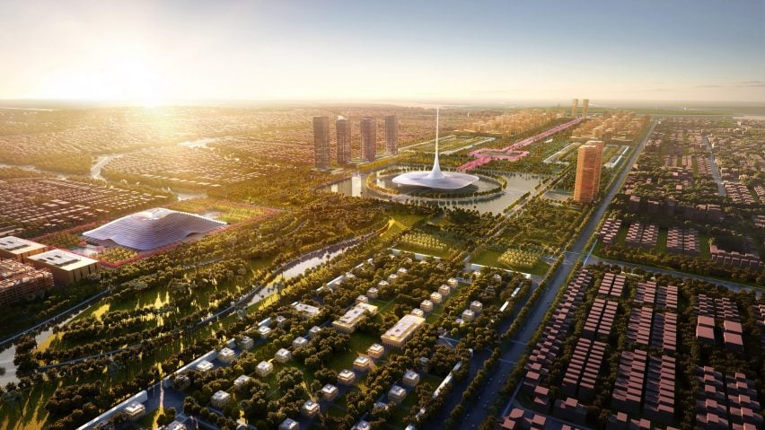
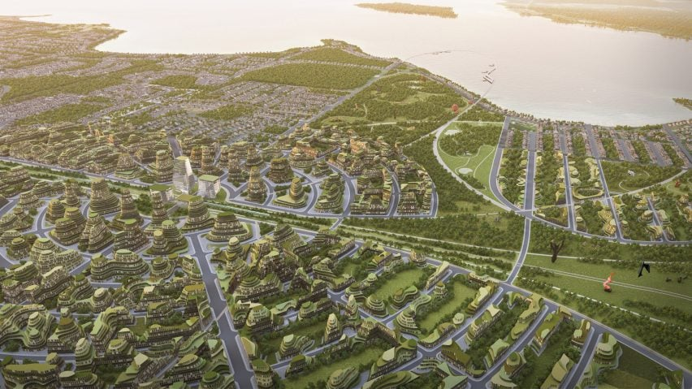
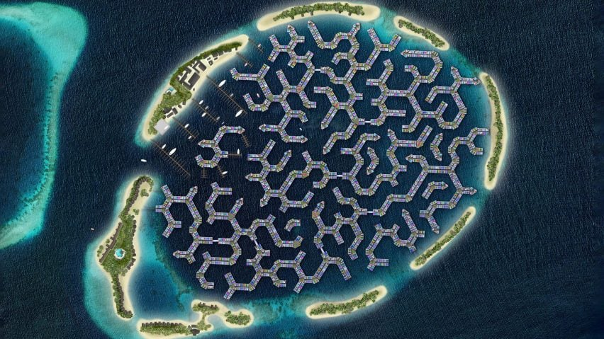
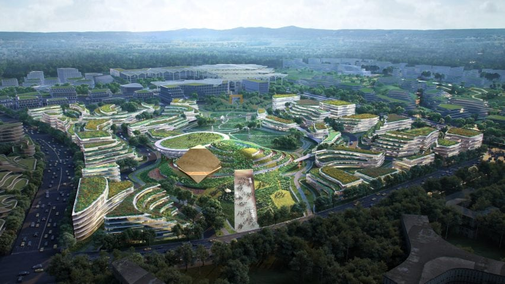
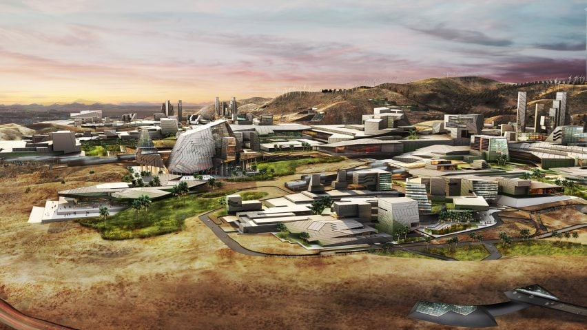

Future City News
Stay up-to-date with the latest news and developments in the Future City.
9 futurisitc cities set to be built around the world.
As a 170-kilometre-long mirrored megacity in the Saudi desert makes headlines, here is a roundup of 9 futuristic cities currently being planned across the globe.
Global issues such as the housing crisis and climate change are galvanising ambitions for a new generation of high-tech cities.
The Line, a 500-metre-tall skyscraper that will house nine million people in northwestern Saudi Arabia, as shown in this video, is the most recent example but not the only one.
BIG, Foster + Partners and OMA are among multiple architecture studios helping to masterplan futuristic urban centres, which often claim to be designed with a focus on sustainability.
Below are 9 ambitious cities set to be built in the coming decades:
1.The Line, Saudi Arabia
The Saudi Arabian government this week unveiled visuals for a 170-kilometre-long, 500-metre-tall linear city planned as part of the Neom mega-development.
Despite its length and expected population of nine million, The Line will be just 200 metres wide with a transport system promised to connect the two ends within 20 minutes.
The city was designed as an alternative to the traditional circular urban layout, with Saudi crown prince Mohammed bin Salman touting it as "a model for nature preservation and enhanced human livability".
Find out more about The Line »2.Telosa, USA, designed by BIG
Danish architect Bjarke Ingels and his studio BIG are master planning Telosa, a city for five million set to be built from scratch on an as-yet undisclosed site in the US desert.
The project is the idea of billionaire entrepreneur Marc Lore, who hopes it will become "the most sustainable city in the world". Part of Lore's vision is that the land will be owned by a community endowment, meaning increases in value could fund the city's development with resident welfare as the priority.
Find out more about Telosa »3.BiodiverCity, Malaysia, designed by BIG
BIG is also master planning BiodiverCity, a 1,821-hectare development of three artificial islands built off the shore of Malaysia's Penang Island for the state government.
Each lily-pad-like island is expected to house 15,000 to 18,000 residents and be connected by an autonomous transport network with no cars.
Buildings will be mainly constructed using a combination of bamboo, timber and concrete produced from recycled materials, with an ecological buffer around each district to support biodiversity.
Find out more about BiodiverCity »4.New Administrative Capital,Egypt, designed by SOM
Egypt is building an entirely new capital city for up to seven million people in order to relieve congestion in rapidly growing Cairo, its current capital
Architecture firm SOM produced a masterplan for the privately funded project, which will cover 700 square kilometres and feature one of the world's largest urban parks.
Indonesia's government has also announced major plans to build a new capital city on the island of Borneo. Its existing capital Jakarta is the world's fastest-sinking city, having sunk by 2.5 metres in the 10 years to 2019.
Find out more about New Administrative Capital »5.Amaravati, India, designed by Foster+Partners
Set on the banks of the River Krishna, the city of Amaravati will act as the new capital for the Andhra Pradesh state in India.
It will be arranged around a needle-topped government building and see more than 60 per cent of its central district occupied by greenery or water.
"The design brings together our decades-long research into sustainable cities, incorporating the latest technologies that are currently being developed in India," said Foster + Partners, which is also master planning large neighbourhoods in Ho Chi Minh and Bangkok.
Find out more about Amaravati »6.Smartest Forest City, Mexico, designed by Stefano Boeri Architetti
Italian architect Stefano Boeri is working on plans for a forested smart city near Cancun that will contain 7.5 million carbon-absorbing plants and trees across its 557 hectares. It will be designed to house 130,000 people in affordable, plant-covered homes and aims to pioneer a more sustainable way of city living.
"Smart Forest City Cancun is a botanical garden within a contemporary city, based on Mayan heritage and in its relationship with the natural and sacred world," said Boeri's studio. "An urban ecosystem where nature and city are intertwined and act as one organism."
Find out more about Smartest Forest City »7.The Orbit,Canada, designed by Partisans
The Orbit is another planned smart city, intended to transform a Canadian farming town through extensive use of fibre optics, drones and autonomous vehicles, with development decisions based on big data.
Toronto firm Partisans has described its design as a modern version of the garden city movement that emerged in the UK in the early 20th century.
It aims to balance new technologies with the existing agrarian setting while growing the town from 30,000 to 150,000 residents.
Find out more about The Orbit »8.Maldives Floating City, Maldives, designed by waterstudio
Rising sea levels due to climate change mean much of The Maldives is expected to be uninhabitable by 2050. In response, the country's government has partnered with architecture practice Waterstudio to design a floating city that will house 20,000 people in a lagoon near its capital as soon as 2024.
Billed by the architects as "the world's first true floating island city", it will include 5,000 low-rise floating homes and be built on a series of hexagonal structures that rise with the sea. Another prototype climate-resilient floating city is being designed by Danish studio BIG together with Samoo and tech company Oceanix for the seas off Busan in South Korea.
Find out more about Maldives Floating City »9.Innovation Park, USA, designed by Ehrlich Yanai Rhee Chaney Architects and Tom Wiscombe Architecture
Cryptocurrency magnate Jeffrey Berns plans to develop part of Nevada's desert into a smart city powered by blockchain technology.
With the help of architecture studios Ehrlich Yanai Rhee Chaney Architects and Tom Wiscombe Architecture, he intends to transform the 27,113-hectare plot into a community where people can bank, vote and store data without involvement from governments or third parties.
Find out more about Innovation Park » Like
Like Don't sell the content
Don't sell the content